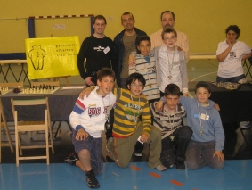
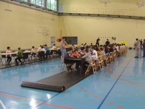
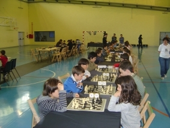
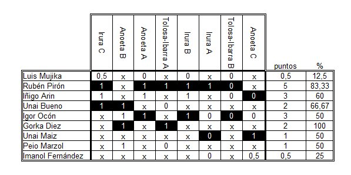

Club de Ajedrez Agustín de Leiza |
| » inicio » socios del club » cto. por equipos » últimos torneos » enlaces |
Torneo Kutxa, fase previa en Anoeta25-05-09Este es el primer año que participamos en el torneo que organiza la KUTXA para chavales por equipos, Urtzi y Rubén ya participaron en el individual. Lo hemos hecho conjuntamente con el club de Billabona juntando en total a 9 chavales de las dos localidades. Por nuestra parte han jugado Rubén Pirón, Gorka Diez, Unai Bueno y Peio Marzol.  El equipo de Andoain - Billabona
recibiendo sus medallas en esta fase del torneo.
Esta primera fase se ha llevado a cabo en el polideportivo Abraham Olano de Anoeta, con la organización del club de ajedrez Tolosa-Ibarra y la excelente dirección de Ramón Etxeberria. La sala de juego era amplia, la pista del polideportivo, con un área de juego y otra adyacente para que los críos se entretuvieran cuando no estuvieran jugando, además tenían la posibilidad de salir de sala de juego y estar en la grada junto a los padres. No hubo ningún problema en las dos jornadas que ha durado la prueba, las victorias y las derrotas se aceptaban igualmente con toda deportividad, aun con la corta edad de muchos de los participantes.  En cuanto a los nuestros se puede hacer una lectura desigual, en la primera jornada en las que disputamos cuatro partidas, no se perdió ningún encuentro, incluso se empató contra los eventuales ganadores del zonal. Sin embargo en la segunda jornada se tornó la suerte y sólo se ganó 1 de los 4 encuentros disputados, aunque gracias a la renta de la primera jornada se pudo mantener el tercer puesto que puede dar la clasificación para la final.  En lo que respecta a los chavales de nuestro club, la estrella del equipo fue Rubén, fue el único que pudo acudir a las dos citas, y aunque perdiese rápidamente contra su rival de Tolosa-Ibarra B, no resta mérito a su actuación ya que jugó todas las partidas con las piezas negras. El resto de jugadores solo pudo ir en la primera jornada, Gorka ganó las 2 partidas que disputó, apunta alto y Unai y Peio también tuvieron buenas actuaciones, con más merito para Peio ya que esta era su primera competición.  La cantera sigue adelante con sus progresos, a ver si este tercer puesto se materializa en la clasificación para la final y se puede hacer una buena actuación allí también. Toda la información de este torneo como siempre en pdf. |